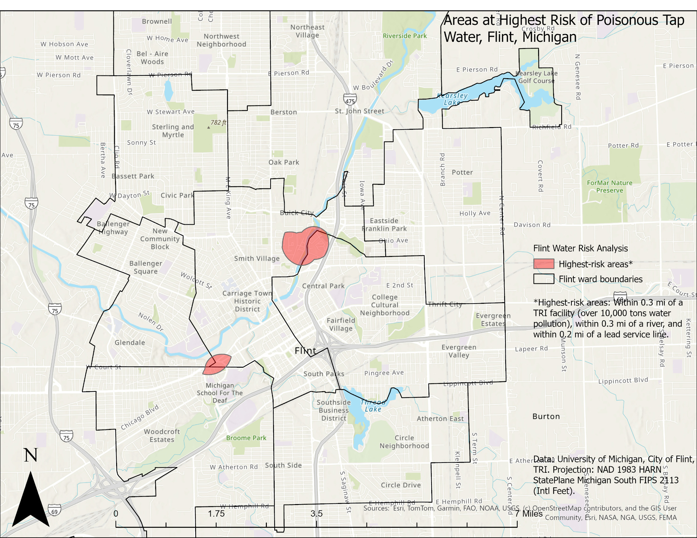

Where is Flint's tap water most at risk?

The story
After Flint switched its water source in 2014, lead from aging pipes got into residents' tap water, and the city needed to know where the danger was greatest. I defined the highest-risk areas as places within 0.3 miles of a Toxic Release Inventory (TRI) facility reporting over 10,000 tons of water pollution, within 0.3 miles of a river, and within 0.2 miles of a lead service line. I projected every layer to Michigan State Plane South so distances were measured accurately, selected the heaviest polluters by attribute, and buffered each set of features. Intersecting the three buffers left only the places where all three risks overlap. The result is two small zones, one along the Flint River near Buick City and one near the Michigan School for the Deaf, which narrows a citywide crisis down to the places where testing and pipe replacement should start.
Only two small areas in the city meet all three risk conditions at once.
GIS tools & skills used
- Project (NAD 1983 HARN State Plane Michigan South)
- Join and Select by Attribute
- Buffer (Dissolve All)
- Intersect (overlay of three criteria)
- Layout design: legend, scale bar, north arrow, data sources